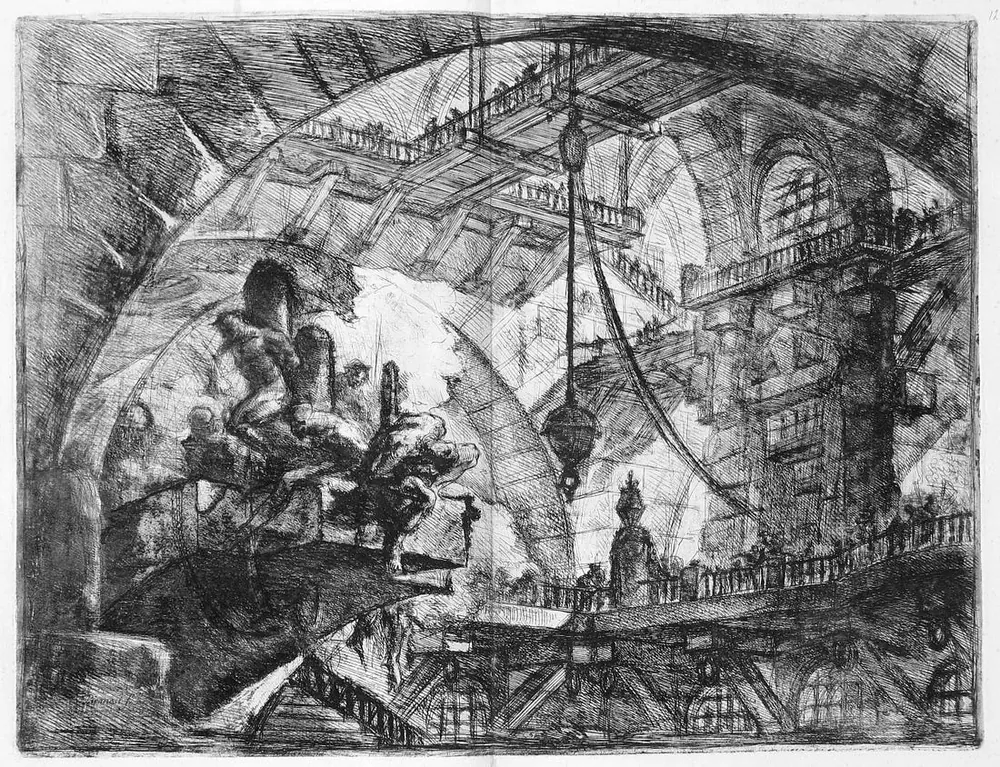
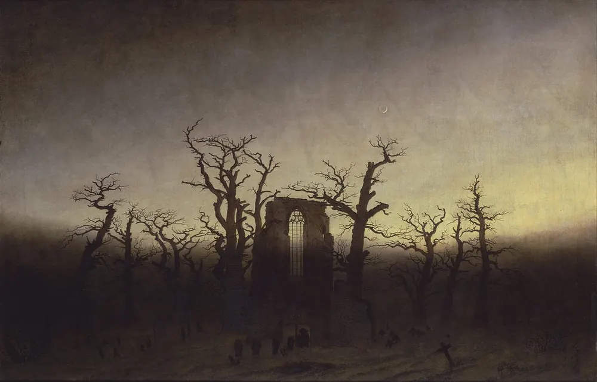
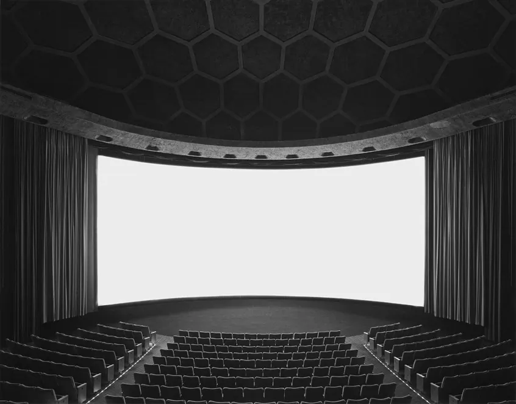
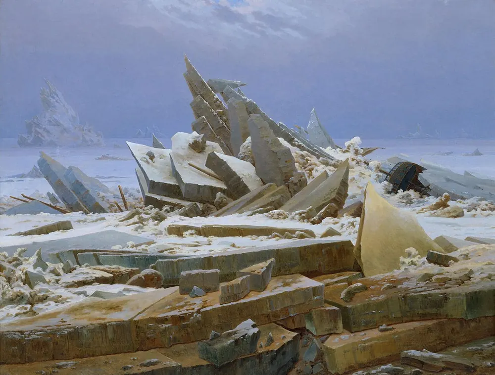
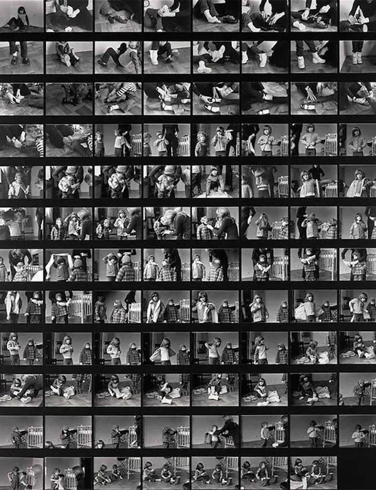
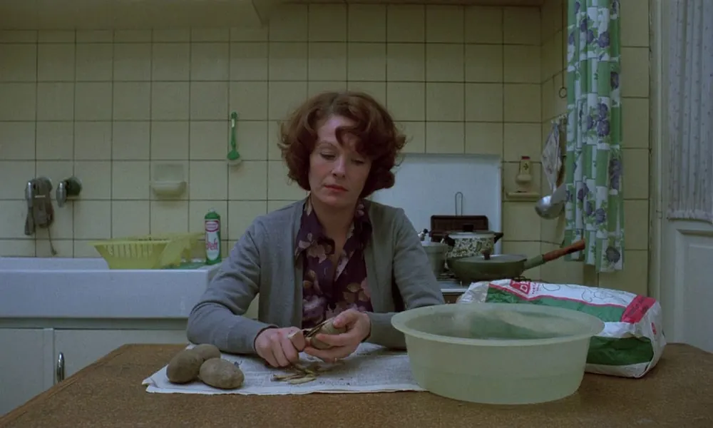

Diario de un Robot · 1 de febrero de 2026February 1, 2026
Mantenimiento: por qué sostener es más difícil que crear
De la etimología a Sísifo: un ensayo sobre la ética del cuidado, la ruina necesaria y el absurdo de mantener lo que amamos
This essay is only available in Spanish for now.
El mantenimiento es el máximo símbolo de la civilización. La frase no es mía, la escuché, la anoté y nunca más pude encontrar su origen. Después de varias búsquedas infructuosas no me queda más que pedir que estas palabras tengan un merecido reencuentro con quien las generó; mientras tanto las voy a usar para mis propios fines.
Las palabras tienen una particularidad de resonancia al actuar en conjunto con una cabeza receptiva. La frase rebotó durante semanas dentro de mi cráneo hasta que impactó con otras ideas que venían haciendo un recorrido similar dentro de mí. Quizás por eso escribir se siente como quitarse un peso de encima: uno se carga de material, deja que trabaje dentro de sí, horade los pliegues de nuestro cerebro y de golpe con un impacto coalesce en una idea al mezclarse con otro pensamiento.
En este caso la mezcla es variada. Primero, debí perderme en la etimología de la palabra que hoy nos ocupa: “mantenimiento”. Luego, la traducción tomó el primer plano buscando similitudes y diferencias con otros idiomas. El amor por la palabra me hizo buscar su contrario, la ruina, una imagen potente si las hay. De ahí llegué a varias concepciones de mantenimiento y sostén específicas con Weil y Camus. En el camino, puse lado a lado el mantenimiento y la sostenibilidad que prometían poder dialogar. ¿Cómo se despliega el mantenimiento?

Consideraciones etimológicas
Primero, la etimología. Mantenimiento, del latín manus tenere, tener en la mano, junto al sufijo -mento (medio o resultado). Es decir: sostener algo durante un período indeterminado. El lenguaje está plagado de metáforas, pensamos por analogía y este es un caso más. Mantener algo en estado, evitar su rotura, es una expansión del original tenerlo entre los dedos.
Los sinónimos y campo semántico relacionado pueden ser reveladores: sustentar, cuidar, conservar, acompañar, apoyar, proteger, estar presente, comprometerse, sujetar, proveer, alimentar, sostener, soportar, sobrevivir, responsabilizarse. Este asegurar en la mano es un acto propio de la ética del cuidado (como diría el Flaco, cuidá al de al lado). La miríada de verbos asociados están todos cargados de responsabilidad. Este gesto, aunque al principio pareciera liviano, implica un acto pesado. No todas las palabras tienen el mismo bagaje.
El mantenimiento implica desde su origen una acción y un efecto. La atención de cuidar que permite la conservación; la reparación que devuelve a la vida lo perdido; la prevención contra el paso del tiempo y las inclemencias. El acto tiene un presupuesto dentro: la posibilidad de evitar el desgaste, de anticipar problemas mayores, de hacer perdurar estructuras y sistemas. Es un acto correctivo, idealmente pausado y estipulado, muchas veces inesperado y urgente. Cree que la presencia y la atención pueden evitar el deterioro. Y no solo el castellano lo cree, es una preocupación compartida en lenguas vecinas.

¿Amigos en otros idiomas?
Faux amis, falsos amigos, es un concepto que una y otra vez nos repitieron en el colegio donde aprendí francés. Maintenant (ahora) sería un falso amigo de mantener (que se dice maintenir). Borges y San Agustín descreen de la etimología, a pesar de amarla. Quizás uno solo puede amar a lo que verdaderamente no le ve utilidad. Maintenant recupera la misma etimología que discutimos: en tenant par la main (teniendo de la mano). Originalmente refería a lo inmediato de un gesto significando “en este momento”: quizás por la fugacidad del acto (Roberto Calasso nunca deja de señalar la importancia mística de los gestos precisos, la liturgia).
Así maintenant transfiguró su significado a la immediatezza, lo inmediato, el presente fugaz, realzando lo breve de nuestra capacidad de sostener algo en nuestra palma. No importa qué agarremos, necesariamente se escapará como arena entre los dedos. La propia palabra se fugó de un significado a otro, incapaz de mantener su promesa original de describir el mundo de cierta forma.
Maintenir (mantener) permanece en el francés y continúa paralelamente en el manter portugués, en el italiano mantenere (que todavía mantiene su significado original de llevar en la mano) y en el inglés to maintain. La acepción sajona expande la imagen con sus to stick to, to stay fair, to persist, to keep up, to uphold, to hold fast. La naturaleza dual del inglés los hizo adoptar la palabra del francés antiguo, que a su vez muta a partir del latín.
Los ejemplos en los diccionarios son reveladores: mantener el orden, mantener el contacto, mantener una máquina, mantener una relación, mantener una buena postura, mantener un sistema. Incluso su derivación conflictiva con el mantenido: el que depende de otros cuando podría valerse por sí mismo.
Pero, incluso si tuviéramos la voluntad de sostener cuanto peso podamos cargar, ¿es factible mantener y no dejar caer?

La ruina, último destino
Ruĕre, “caer”, ruina. Si mantener era sostener en la palma, la ruina es su antónimo. Dejar caer en la ruina es una redundancia. Arruinarse es el proceso de destruirse, de soltarse, proceso al que todo está sometido desde su existencia. Es la pérdida total o parcial de la riqueza material o moral. Las personas también se arruinan, Lucifer cayó y su pierna quedó arruinada, el ángel caído. Son lo mismo la ruina y la caída, como los arcos romanos de triunfos olvidados que hoy yacen entre el pasto o los restos que sobrevivieron al agua en Villa Epecuén.
Hay infinitos motivos para la decadencia, pero Cronos está en el corazón de todos. Encontramos la ruina por inacción, por falta de atención. Crear es difícil, pero es más fácil que mantener. Levantar una catedral es posible, lograr que dure mil años es improbable. Los pilares de la tierra están construidos sobre arenas movedizas: el destino de todo edificio es la ruina. Quizás el milagro es que algo permanezca: las pirámides de Egipto, el Partenón, Angkor Wat, el Coliseo, las ruinas del Valle de Upano en medio del Amazonas.
Toda ciudad tiene sus abanderados antientrópicos: el café más antiguo, la primera casa conservada, la piedra fundacional, el pozo de agua del que bebieron nuestros antepasados, las paredes que vieron nacer próceres, los centros de poder que aún se mantienen. La miopía del presente evita anticipar su caída. Percy Bysshe Shelley lo retrata en su soneto, Ozymandias:
I met a traveller from an antique land,
Who said—“Two vast and trunkless legs of stone
Stand in the desert. . . . Near them, on the sand,
Half sunk a shattered visage lies, whose frown,
And wrinkled lip, and sneer of cold command,
Tell that its sculptor well those passions read
Which yet survive, stamped on these lifeless things,
The hand that mocked them, and the heart that fed;
And on the pedestal, these words appear:
My name is Ozymandias, King of Kings;
Look on my Works, ye Mighty, and despair!”
Nothing beside remains. Round the decay
Of that colossal Wreck, boundless and bare
The lone and level sands stretch far away.
La civilización es un acto persistente de mantener: mantener instituciones, personas, sistemas, instalaciones, infraestructura, costumbres, historias. Las ruinas de Kasch, recuperadas por Calasso, son el testimonio de qué pasa cuando nos olvidamos del elusivo paso del tiempo y, suspendidos en historias y entretenimiento, nos olvidamos de sostener lo esencial. Es posible entretenernos hasta la muerte, hemos inventado artefactos perfectos que viven con nosotros, vampirizan nuestra atención y ocupan nuestras manos, incapaces de mantener otra cosa que no sea su pantalla.
Sin embargo, el desafío de nuestros orígenes persiste. Imperios, países, relaciones, amistades y familias tienen la misma dificultad: construir una casa es posible, mantener un hogar, quizás no. Pero, ¿y si lo que sostenemos es lo que nos asfixia?

¿Qué ruinas queremos?
Mi punto ciego es el conservacionismo inherente a mi deseo de mantener, mi miedo a la muerte. Pero, ¿hay ruinas deseadas? En Goodbye Lenin, dos jóvenes alemanes del Este mienten a su madre para sostener una farsa: que el muro no había caído, que el sistema de la RDA no había muerto, que la reunificación no se había dado.
La destrucción creativa aparece en Schumpeter, en Marx, en Nietzsche, en Bakunin y en el propio dios hindú Shiva, deidad de la creación y la destrucción. Plantean la tensión entre veneno y cura. Las monarquías absolutistas debieron caer para que florezcan las repúblicas modernas, las teocracias y sus líderes supremos verán la ruina antes de que florezca en su lugar algo mejor.
Más allá de si el mantenimiento es posible, no toda conservación es deseable. Los cambios no son siempre para bien, no podemos predecir hacia dónde nos llevará la entropía, pero si el acto de sostener es tan limitado, podemos decidir qué queremos que permanezca y qué dejar ir. La caja de piezas de LEGO me era mucho más estimulante que el modelo terminado, no hay juego con el producto final. Hay vistas que solo se pueden ver desde la altura, pero siempre resuena en mí: viaje antes que destino.
El propio manto terrestre se renueva, apresando rocas entre las placas tectónicas, fundiéndolas y luego volviendo a expulsar material por las dorsales oceánicas. Nuestros dientes destruyen materia orgánica para luego recomponerla en tejidos propios. Fue necesario picar una cantera de mármol de Carrara para levantar la Catedral de Santa María del Fiore. El orden se alimenta de la ruina.
Para poder levantar un santuario hay que destruir un santuario: esta es la ley, ¡muéstreseme un solo caso en que no se haya cumplido! —Friedrich Nietzsche.
Queda en nosotros a qué dioses queremos rendirles pleitesía y dedicarles tiempo en la oración ya que, veremos, nuestra atención es limitada.
La atención como forma de amor
Simone Weil, filósofa, mística y activista política francesa, ponía a la atención como la máxima virtud para acercarse a otros y a Dios. En sus Reflexiones sobre el buen uso de los estudios escolares como medio de cultivar el amor a Dios (1942) establece que la oración está hecha de atención, con unos tintes que recuerdan al budismo. La oración sería dirigir toda la atención de que el alma es capaz hacia Dios. Mantener la atención en la oración.
Sin embargo, Weil no plantea la atención como un hecho esforzado, lo que imaginaríamos al mantener la atención sobre algo. Plantea una verdadera forma de hacerlo sin que requiera tensión (parte intrínseca de la palabra, en realidad). Recupera la importancia de la alegría en el acto de atención y realza la necesidad de suspender el pensamiento, dejarlo disponible y vacío. ¿Es esto mantener un estado particular de la consciencia o al revés, reconocer que el peso es imposible de sostener, dejándolo caer?
Para Weil, el mayor acto de amor hacia el prójimo (que equipara con el propio amor) está formado de esta misma sustancia: la atención. Toma la leyenda del Graal y establece como un verdadero milagro cuando otro (o uno mismo) se detiene y pregunta “¿Cuál es tu tormento?”. Si es permitida una etimología más, tormento que viene de torque, de tensión, de retorcer, el acto de mantener en su deformación, la atención en su lado más tortuoso: el tormento es eso que no podemos dejar ir, lo que nos toma y nos doblega, una máquina de guerra contra uno mismo. A veces, no hay más que dejar ir, no mantener. Incluso, ¿qué pasa cuando queremos sostener nuestra capacidad de destruir?

Siempre postergables: mantenimiento y sustento
El mantenimiento es absolutamente necesario y el mantenimiento es opcional. Es fácil posponerlo, pero hay que hacerlo. Si lo posponés, te vas a arrepentir más tarde. El descuido mata. —Stewart Brand.
Encontré una nueva divergencia: la metáfora del mantenimiento y el sustento en un campo de batalla. No soy demasiado amigo de las metáforas de guerra, una postura que obtuve de Susan Sontag, pero es difícil no ver cierta utilidad en este caso.
Militarmente, el sustento es la provisión que hace falta para mantener las operaciones hasta completar una misión con éxito. Uno espera el caos en el campo de batalla y se hace cargo: la guerra requiere un alto grado de toma de responsabilidad. Requiere mantener la capacidad de arruinar siempre locked and loaded.
El sustento implica prácticas de mantenimiento y soporte para hacer perdurar o mejorar un sistema. Es un acto nutricio. Para que la máquina corporal funcione, requiere sustento: dormir, comer, ejercitarse física y mentalmente. En caso contrario, ya sabemos qué pasa cuando se abandona la homeostasis.
La definición más conocida de sostenibilidad es algo así como el “desarrollo que satisface las necesidades de las generaciones presentes sin comprometer la capacidad de las generaciones futuras para satisfacer sus propias necesidades”. La distinción es que la “sostenibilidad” es una meta, mientras que el “sustento” es un plan, un conjunto de acciones. Uno aspira, el otro dice cómo se hace.
La sostenibilidad se convirtió en un objetivo bastante vago que imagina un estado estable en un futuro indefinido. Sin embargo, en el equilibrio las cosas no cambian y lo que no cambia, lo que no fluye, muere. El sustento exige un curso de acción hoy mismo, iterativo y ajustado constantemente. La sostenibilidad no dice casi nada sobre cómo empezar mientras que el sustento dice: a laburar. El compromiso de mantener debe invocar una resistencia implacable.
Alimentar, educar, limpiar, arreglar, proteger son todas acciones que tienen sentido sostenidas en el tiempo, son los pilares de nuestra vida en común. El trabajo reproductivo suele pasar desapercibido por quien no lo realiza ya que se da por sentado. Es el acto de Penélope que teje y desteje cada día para postergar un final indeseado. No hay civilización sin las huestes de manos invisibles que sostienen el suelo por el que caminamos. El propio sistema democrático que tenemos nos pide una sola cosa: que paguemos el costo de protegerlo un día tras otro, aunque juguemos con la cancha inclinada.

La absurda imposibilidad de mantener
Solo importan los imposibles. Establecimos que el acto de llevar algo en la mano es equivalente a sostenerlo en el tiempo. Si me dicen “estirá la mano, abrí la palma” y apoyan algo sobre mi piel dudosa, lo estaré manteniendo. ¿Cuánto tiempo se puede permanecer en ese gesto? Es lógico pensar que uno puede sostener algo durante unos segundos, incluso minutos, horas si mi vida dependiese de ello, pero incluso la palma sola extendida, soportando el peso del aire, eventualmente se rinde. El mantenimiento es una tarea imposible.
Aparecen las similitudes con el Sísifo de Camus. Me acuerdo de chico preguntarle a mis padres, ¿para qué bañarse si me voy a volver a ensuciar? ¿Para qué limpiar la casa a fondo? ¿Para qué barrer la vereda? ¿Para qué una y otra vez sacar las telarañas de los rincones? ¿Para qué comer si me va a asediar el aire? ¿Por qué esos monjes tan graciosos hacen y deshacen sus mandalas? El universo orquesta un caos indiferente que ataca toda presunción de orden.
Sin embargo, Camus plantea el acto imposible de llevar una y otra vez la misma piedra a la misma cima como una respuesta al absurdo que nos asedia. El amor tiene algo de este acto imposible, la literatura también, son procesos que nunca terminan, solo pueden ser mantenidos en el tiempo, un pasaje de antorchas en un universo a oscuras. El ciclo del samsara.
Al visitar las ruinas de Tipasa después de la Segunda Guerra, Camus hace énfasis en la imposibilidad del amor, al mismo tiempo que resalta su necesidad para evitar la desdicha.
[...] yo contemplaba el mar que a esa hora apenas se levantaba con leve movimiento agotado y satisfacía esas dos sedes que no puede uno engañar por mucho tiempo sin que el propio ser se deseque, quiero decir, amar y admirar. Porque sólo es mala suerte no ser amado y desgracia el no amar. Hoy todos morimos a causa de desgracia. Lo que ocurre es que la sangre y los odios descarnan hasta el propio corazón; la larga reivindicación de la justicia agota el amor que, sin embargo, fui quien le dio nacimiento. En la situación en que hoy vivimos el amor es imposible y la justicia no basta.
Sin embargo, el amor es un acto de mantenimiento. De grandes o pequeñas acciones, pero activo. De inmensas llamas o un fuego en piloto, implica una acción que es sostenida en el tiempo. Querer es buscar y buscar es actuar. Sísifo tiene una ventaja frente a nosotros: su inmortalidad; no necesita comer ni alimentar a otros, no cura los callos de sus manos ni atiende las heridas de otros, no se detiene a asegurarse de que los demás duerman mientras él vigila. Sísifo es incompleto, porque está solo. De todas formas, no hay amor en la estasis, si Sísifo suelta la roca y se sienta al pie de la colina, abandona toda pretensión de amar. Quizás podemos imaginar a Sísifo feliz, sí, pero solo si ama a su roca y el cuidado que representa, acto que requiere que la tome entre sus brazos, le preste atención y mantenga el esfuerzo por cargarla sabiendo de lo inútil de su cometido, sabiendo que sus palmas van a fallar.
Este correo tomó 237 minutos, el tiempo que dura Love Exposure (2008) de Sion Sono.
Debo admitir que la motivación a escribir este artículo fue la dificultad de mantener la publicación semanal en temas de no ficción. Extraño la ficción, pero siento que este newsletter no es su hogar. ¿Qué te parece, pueden convivir acá o debería buscar un lugar alternativo? Por ahora sigo enviando mi libro de cuentos a concursos y editoriales para probar suerte. Si pudiera hacer uso de esta conciencia expandida te pediría ayuda con ese tema, que sería inmensa.
Nos leemos la próxima.
Escribí leyendo